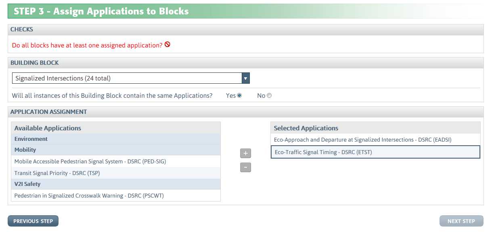
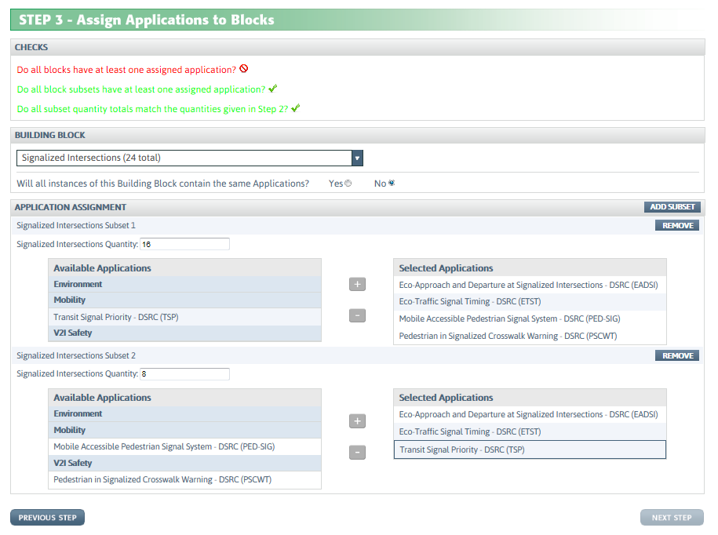
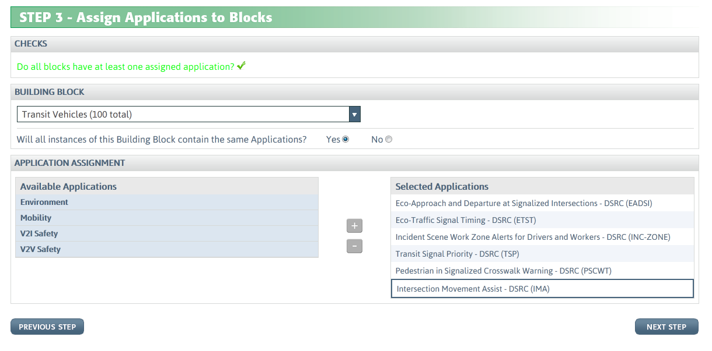
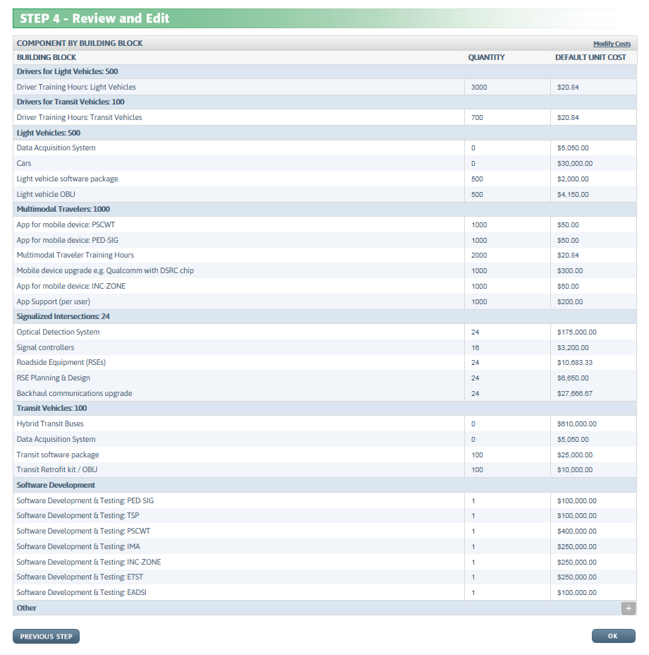

CO-PILOT allows stakeholders to estimate the costs of proposed pilot deployments at a high level, both to refine deployment plans and to reduce the risk that the requested Federal cost share will exceed the pilot deployment grant ceiling.
CO-PILOT breaks down the various connected vehicle applications into Building Blocks and components or elements.
Building Blocks are locations / entities that require components for an application, e.g., Signalized Intersections, Transit Vehicles, Multimodal Travelers, etc.
Cost Components are individual elements at a Building Block, e.g., for Signalized Intersections the Cost Components may include detection systems, Roadside Equipment (RSEs), etc.
Click on the "Start Using the Tool" link on the Home page, or click the "COST ESTIMATION" link in the blue navigation bar, to proceed to Step 1.
In Step 1, Select Application, choose the application(s) you are planning to deploy.
In Step 2, Specify quantities for each Building Block, enter the quantities for the Signalized Intersections, Transit Vehicles, Multimodal Travelers, etc. Note that only Building Blocks that are associated with the applications you have selected in Step 1 can be utilized in Step 2. For instance, if you select only an application that is associated with Unsignalized Intersections, you will not be able to enter a quantity for Signalized Intersections.
*Note that you cannot advance to Step 3 until you have selected both applications and Building Blocks, as explained in the Tool Tip on the Next Step button.*
In Step 3, Assign Applications to Building Blocks, each Building Block must be selected using the drop-down list. For the selected Building Block, answer the question asking whether all instances of the Building Block contain the same Applications, or not.
If the answer to "Will all instances of the Building Block contain the same Application?" is Yes, then proceed to the Application Assignments section for all instances of that Building Block (Figure 1). The list of Available Applications on the left for that Building Block is filtered to include only the applications selected in Step 1, and further filtered to include only applications that use the selected Building Block. Highlight applications from the Available Applications list on the left and use the "+" to move the application to the Selected Applications list on the right.

Figure 1: Step 3 – Assign Applications, for all Building Block Instances with same Applications
Select No in response to the question "Will all instances of the Building Block contain the same Applications?" if subsets of a Building Block have the same applications, rather than all instances of the Building Block (Figure 2). Then proceed to select Applications for each Building Block subset. Initially two subsets are presented, and you can add more subsets if needed using the "Add Subset" button. Subsets can be removed using the "Remove" button.

Figure 2: Step 3 – Assign Applications, for Subsets of a Building Block with same Applications
After completing these Application selections for a particular Building Block, use the Building Block drop down list in Step 3 to similarly select the next Building Block and assign Applications to it. The Checks section at the top of Step 3 tracks whether you have assigned applications to all Building Blocks or not, and will turn green to indicate that all blocks have at least one assigned application (Figure 3). The Checks section is more extensive when you are using Building Block subsets that do not all have the same applications, and tracks the subset quantity totals to ensure they match the quantities in Step 2.

Figure 3: Step 3 – Checks Section Criteria Fulfilled
When all Building Blocks have applications assigned to them, and the Checks section questions turn green to indicate the criteria are fulfilled, click on the Next Step button to proceed to Step 4.
*Note that you cannot advance to Step 4 until you've assigned applications to all Building Blocks.*
In Step 4, the component quantity requirements have been consolidated across applications at each Building Block or each Building Block subset, and are presented to you (Figure 3). CO-PILOT assumes that if multiple applications at a Building Block each require one of a particular component, only one of these components is needed to cover all applications there, with some exceptions. You have the opportunity to Review and Edit in Step 4, if necessary. You can change the Quantities or Default Unit Costs by clicking on the "Modify Costs" link in the upper right corner. The quantity and default unit cost values will then become editable.
*Note that if you change the Unit Cost, the CO-PILOT cost estimation module will assume that cost is fixed rather than simulated by selecting costs randomly from a distribution.*
You can add other cost components by clicking on the "+" button at the bottom right, opposite from “Other"; you will then be able to enter a text string identifying the new component, along with a quantity and cost. Any component added with this feature will also have a fixed cost. Multiple additional components can be added, if desired. Any component added with this feature can be removed with the “-“ button that will appear after a new component is added. Click OK when modifications are completed, to run the CO-PILOT cost estimation simulation.

Figure 4: Review and Edit
An existing CO-PILOT output spreadsheet can be uploaded into CO-PILOT, to expedite data entry for future runs. See “Have an existing CO-PILOT output spreadsheet?” at the upper right corner of the Cost Estimation pages. Click “Browse” to select the spreadsheet saved on your computer, then click Upload. Data in the spreadsheet is used to populate inputs in Steps 1 – 3, which can then be modified if desired.
Noblis, Inc. ("Noblis") is committed to protecting your privacy. Please read this Privacy Policy for more details about how we use information you submit to the CO-PILOT website ("CO-PILOT"). This Privacy Policy constitutes the entire agreement between you and Noblis relating to the CO-PILOT website. By your use of CO-PILOT, you consent to be governed by this Privacy Policy.
1. Personally Identifiable Information
You can visit the CO-PILOT website without disclosing any information about yourself. Registration or login is not required to use CO-PILOT.
2. Connected Vehicle Pilot Deployment Information
We do not collect or store information on the Connected Vehicle Pilot Deployment scenarios or costs that you input to CO-PILOT.
3. Aggregated Information
To evaluate CO-PILOT and ensure that we are providing a tool of interest to you, we may collect and store statistical information regarding how you use CO-PILOT, the Internet Protocol address, the name of your Internet Service Provider, operating system, the website that referred you to CO-PILOT, and the time, date, and frequency that you view CO-PILOT. We may share this aggregated, statistical information with our third-parties.
4. Disclosure for Lawful Purposes
Noblis reserves the right to access and disclose Aggregated Information to comply with applicable laws and lawful government requests, to operate its systems properly, or to protect itself or others.
5. Notification of Changes
Noblis reserves the right to modify this Privacy Policy at any time. Please review this Policy from time to time to ensure your familiarity with its terms. If you have any questions about this Privacy Policy, please contact
co-pilot@noblis.org.